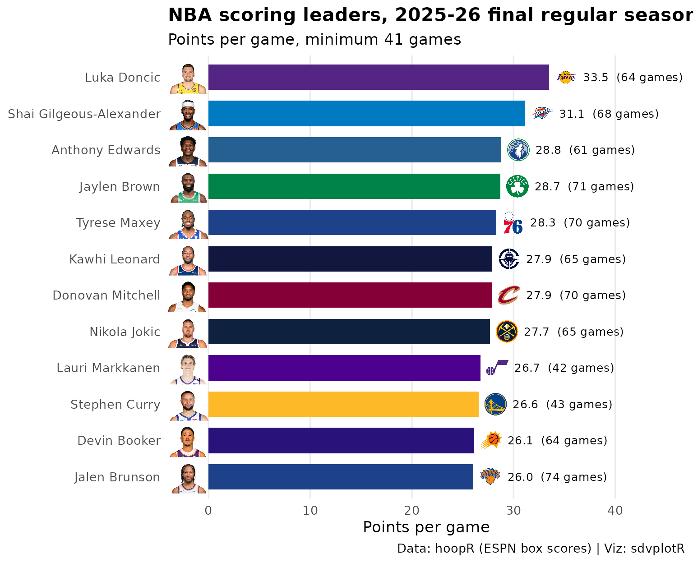

On this page
Updated 2026-10-06: the offseason, so this is the final 2025-26 regular season; the 2026-27 season has no games yet.
This page is rebuilt every week with the site. It builds the standings with offensive, defensive and net ratings, charts net rating with logos and ranks the scoring leaders with their headshots, for the latest NBA season with games: the season to date from October to April, the final regular season once it is over. Data: hoopR’s ESPN box scores, read from release files (no stats.nba.com calls).
Picking the season
NBA seasons are named by the year they end (2025-26 is
2026) and tip off in October, so until then the calendar
points at the season that ended in June. For a season with no file yet
hoopR::load_nba_team_box() warns and returns no rows, and a
new season’s file holds only preseason games at first, so the helper
treats “no regular-season games” as “not published” and the page steps
back one season. The status line says what the numbers cover.
library(sdvplotR)
library(dplyr, warn.conflicts = FALSE)
library(ggplot2)
library(gt)
today <- Sys.Date()
day_label <- function(day, month = "%b") sub(" 0", " ", format(as.Date(day), paste(month, "%d"))) # "Oct 5"
# hoopR names a season by the year it ends (2025-26 is 2026); it tips off in
# October, so until then the calendar points at the season that ended in June
current <- as.integer(format(today, "%Y")) + (format(today, "%m") >= "10")
label <- function(season) sprintf("%d-%02d", season - 1, season %% 100)
# A season's team box scores, or NULL when it has no regular-season games yet:
# load_nba_team_box() warns and returns no rows for a season it has no file for,
# and a new season's file holds only preseason games at first
team_games <- function(season) {
box <- tryCatch(suppressWarnings(hoopR::load_nba_team_box(seasons = season)), error = function(e) NULL)
if (NROW(box) == 0 || !any(box$season_type == 2)) NULL else box
}
season <- current
box <- team_games(season)
if (is.null(box)) {
season <- current - 1
box <- team_games(season)
}
stopifnot(!is.null(box))
last_game <- max(box$game_date)
playoffs <- filter(box, season_type == 3)
if (season < current) {
status <- sprintf(
"the offseason, so this is the final %s regular season; the %s season has no games yet.",
label(season), label(current)
)
through <- "final regular season"
} else if (nrow(playoffs) == 0) {
status <- sprintf("the %s season through %s.", label(season), day_label(last_game, "%B"))
through <- paste("through", day_label(last_game))
} else if (as.numeric(today - max(playoffs$game_date)) <= 10) {
status <- sprintf("the final %s regular season; the playoffs are under way.", label(season))
through <- "final regular season"
} else {
status <- sprintf("the offseason, so this is the final %s regular season.", label(season))
through <- "final regular season"
}ESPN files the All-Star Game and the in-season cup final as
regular-season games, though neither counts in the standings. The
schedule marks them in type_abbreviation
(ALLSTAR, CC), so keep the standard games
(STD) only. Possessions are the usual box-score estimate,
averaged with the opponent’s.
standard <- hoopR::load_nba_schedule(seasons = season) |>
filter(season_type == 2, type_abbreviation == "STD")
stopifnot(identical(class(box$game_id), class(standard$game_id)))
games <- box |>
filter(season_type == 2, game_id %in% standard$game_id) |>
mutate(poss = field_goals_attempted - offensive_rebounds + total_turnovers +
0.44 * free_throws_attempted) |>
group_by(game_id) |>
mutate(poss = mean(poss, na.rm = TRUE)) |> # one side's box can miss a count; the other covers it
ungroup()
teams <- team_reference("nba") |>
select(team = team_abbr, name = team_short_name, conference)
ratings <- games |>
arrange(game_date, game_id) |>
group_by(team = team_abbreviation) |>
summarise(
w = sum(team_winner), l = sum(!team_winner),
l10 = sum(tail(team_winner, 10)),
ortg = 100 * sum(team_score) / sum(poss),
drtg = 100 * sum(opponent_team_score) / sum(poss),
.groups = "drop"
) |>
mutate(pct = w / (w + l), net = ortg - drtg) |>
inner_join(teams, by = "team") |>
arrange(desc(pct), desc(net), team) # the team breaks a tie, so an unchanged week renders the same
head(ratings)
#> # A tibble: 6 × 10
#> team w l l10 ortg drtg pct net name conference
#> <chr> <int> <int> <int> <dbl> <dbl> <dbl> <dbl> <chr> <chr>
#> 1 OKC 64 18 7 116. 105. 0.780 10.9 Thunder Western
#> 2 SA 62 20 8 117. 109. 0.756 8.08 Spurs Western
#> 3 DET 60 22 8 114. 106. 0.732 7.93 Pistons Eastern
#> 4 BOS 56 26 8 117. 109. 0.683 7.85 Celtics Eastern
#> 5 DEN 54 28 10 120. 115. 0.659 5.04 Nuggets Western
#> 6 NY 53 29 6 117. 110. 0.646 6.34 Knicks Eastern1. Standings with net rating
Each conference ordered by winning percentage, with every team’s
points scored and allowed per 100 possessions.
gt_sdv_logos() draws the logos from ESPN’s abbreviations,
which are sdvplotR’s keys for the NBA.
standings <- ratings |>
group_by(conference) |>
mutate(seed = row_number()) |>
ungroup() |>
mutate(
record = paste(w, l, sep = "-"),
last10 = paste(l10, pmin(10, w + l) - l10, sep = "-"),
logo = team
) |>
arrange(conference, seed) |>
select(conference, seed, logo, name, record, pct, last10, ortg, drtg, net)
standings |>
gt(groupname_col = "conference", id = "nba-standings") |>
tab_header(
title = paste("NBA standings and ratings,", label(season)),
subtitle = paste0(toupper(substr(through, 1, 1)), substring(through, 2))
) |>
fmt_number(pct, decimals = 3) |>
fmt_number(c(ortg, drtg), decimals = 1) |>
fmt_number(net, decimals = 1, force_sign = TRUE) |>
data_color(
net,
palette = c("#c84630", "#f7f7f7", "#2e8b57"), domain = c(-1, 1) * max(abs(standings$net))
) |>
tab_spanner("Per 100 possessions", c(ortg, drtg, net)) |>
cols_label(
seed = "", logo = "", name = "Team", record = "W-L", pct = "Pct",
last10 = "Last 10", ortg = "Off", drtg = "Def", net = "Net"
) |>
tab_source_note(paste(
"Data: hoopR (ESPN box scores). Possessions estimated from the box score;",
"ties ordered by net rating. Viz: sdvplotR"
)) |>
gt_sdv_logos(columns = logo, sport = "nba", height = 24) |>
gt_theme_sofa()| NBA standings and ratings, 2025-26 | ||||||||
| Final regular season | ||||||||
| Team | W-L | Pct | Last 10 |
Per 100 possessions
|
||||
|---|---|---|---|---|---|---|---|---|
| Off | Def | Net | ||||||
| Eastern | ||||||||
| 1 |  |
Pistons | 60-22 | 0.732 | 8-2 | 114.4 | 106.5 | +7.9 |
| 2 |  |
Celtics | 56-26 | 0.683 | 8-2 | 117.2 | 109.4 | +7.9 |
| 3 |  |
Knicks | 53-29 | 0.646 | 6-4 | 116.7 | 110.4 | +6.3 |
| 4 |  |
Cavaliers | 52-30 | 0.634 | 7-3 | 116.1 | 112.1 | +4.0 |
| 5 |  |
Raptors | 46-36 | 0.561 | 6-4 | 112.9 | 110.1 | +2.8 |
| 6 |  |
Hawks | 46-36 | 0.561 | 6-4 | 113.3 | 110.9 | +2.3 |
| 7 |  |
Magic | 45-37 | 0.549 | 7-3 | 112.0 | 111.3 | +0.6 |
| 8 |  |
76ers | 45-37 | 0.549 | 6-4 | 112.2 | 112.4 | −0.2 |
| 9 |  |
Hornets | 44-38 | 0.537 | 6-4 | 115.7 | 110.9 | +4.8 |
| 10 |  |
Heat | 43-39 | 0.524 | 5-5 | 113.8 | 111.6 | +2.2 |
| 11 |  |
Bucks | 32-50 | 0.390 | 3-7 | 110.3 | 116.5 | −6.2 |
| 12 |  |
Bulls | 31-51 | 0.378 | 2-8 | 110.6 | 115.5 | −4.9 |
| 13 |  |
Nets | 20-62 | 0.244 | 3-7 | 105.9 | 115.9 | −10.0 |
| 14 |  |
Pacers | 19-63 | 0.232 | 3-7 | 108.3 | 116.0 | −7.7 |
| 15 |  |
Wizards | 17-65 | 0.207 | 0-10 | 108.1 | 119.6 | −11.5 |
| Western | ||||||||
| 1 |  |
Thunder | 64-18 | 0.780 | 7-3 | 116.0 | 105.1 | +10.9 |
| 2 |  |
Spurs | 62-20 | 0.756 | 8-2 | 116.6 | 108.5 | +8.1 |
| 3 |  |
Nuggets | 54-28 | 0.659 | 10-0 | 119.6 | 114.5 | +5.0 |
| 4 |  |
Lakers | 53-29 | 0.646 | 7-3 | 115.4 | 113.7 | +1.7 |
| 5 |  |
Rockets | 52-30 | 0.634 | 9-1 | 115.1 | 109.9 | +5.2 |
| 6 |  |
Timberwolves | 49-33 | 0.598 | 5-5 | 113.8 | 110.5 | +3.2 |
| 7 |  |
Suns | 45-37 | 0.549 | 5-5 | 112.1 | 110.6 | +1.5 |
| 8 |  |
Clippers | 42-40 | 0.512 | 6-4 | 114.5 | 113.3 | +1.1 |
| 9 |  |
Trail Blazers | 42-40 | 0.512 | 7-3 | 111.0 | 111.3 | −0.3 |
| 10 |  |
Warriors | 37-45 | 0.451 | 3-7 | 112.0 | 112.6 | −0.5 |
| 11 |  |
Pelicans | 26-56 | 0.317 | 1-9 | 111.3 | 115.6 | −4.3 |
| 12 |  |
Mavericks | 26-56 | 0.317 | 3-7 | 108.6 | 113.8 | −5.2 |
| 13 |  |
Grizzlies | 25-57 | 0.305 | 1-9 | 109.9 | 115.6 | −5.8 |
| 14 |  |
Jazz | 22-60 | 0.268 | 1-9 | 111.3 | 119.2 | −8.0 |
| 15 |  |
Kings | 22-60 | 0.268 | 3-7 | 108.6 | 118.4 | −9.8 |
| Data: hoopR (ESPN box scores). Possessions estimated from the box score; ties ordered by net rating. Viz: sdvplotR | ||||||||
2. Net rating, best to worst
The same net ratings as bars in team colors.
scale_fill_sdv() maps the abbreviations to each team’s
primary color, and scale_x_sdv() with
theme_x_sdv() swaps the abbreviations on the x axis for
logos.
ggplot(ratings, aes(x = reorder(team, -net), y = net, fill = team)) +
geom_col(width = 0.75) +
geom_hline(yintercept = 0, colour = "grey20", linewidth = 0.4) +
scale_fill_sdv(sport = "nba", guide = "none") +
scale_x_sdv(sport = "nba", size = 20) +
labs(
title = paste("NBA net rating,", label(season), through),
subtitle = "Points scored minus points allowed per 100 possessions",
x = NULL, y = "Net rating",
caption = "Data: hoopR (ESPN box scores) | Viz: sdvplotR"
) +
theme_minimal(base_size = 13) +
theme(
plot.title = element_text(face = "bold"),
panel.grid.major.x = element_blank(),
panel.grid.minor = element_blank()
) +
theme_x_sdv()
3. Scoring leaders with headshots
Points per game from the player box scores (standard games only, as above), for players who appeared in at least half of the most games any team has played. ESPN athlete ids are sdvplotR’s default id for NBA headshots.
players <- hoopR::load_nba_player_box(seasons = season) |>
filter(season_type == 2, !did_not_play, !is.na(minutes), game_id %in% standard$game_id)
most_games <- max(count(distinct(players, team_abbreviation, game_id), team_abbreviation)$n)
leaders <- players |>
arrange(game_date, game_id) |>
group_by(athlete_id) |>
summarise(
name = last(athlete_display_name), team = last(team_abbreviation),
gp = n(), ppg = mean(points), .groups = "drop"
) |>
filter(gp >= most_games / 2) |>
arrange(desc(ppg), athlete_id) |>
slice_head(n = 12) |>
mutate(name = factor(name, rev(name)))
top <- max(leaders$ppg)
ggplot(leaders, aes(y = name)) +
geom_col(aes(x = ppg, fill = team), width = 0.7) +
geom_sdv_headshots(aes(x = -0.06 * top, player_id = athlete_id), sport = "nba", height = 0.075) +
geom_sdv_logos(aes(x = ppg + 0.05 * top, team = team), sport = "nba", height = 0.055) +
geom_text(aes(x = ppg + 0.1 * top, label = sprintf("%.1f (%d games)", ppg, gp)), hjust = 0, size = 3.4) +
scale_fill_sdv(sport = "nba", guide = "none") +
scale_x_continuous(limits = c(-0.12 * top, 1.4 * top), expand = c(0, 0)) +
labs(
title = paste("NBA scoring leaders,", label(season), through),
subtitle = paste("Points per game, minimum", ceiling(most_games / 2), "games"),
x = "Points per game", y = NULL,
caption = "Data: hoopR (ESPN box scores) | Viz: sdvplotR"
) +
theme_minimal(base_size = 13) +
theme(
plot.title = element_text(face = "bold"),
panel.grid.major.y = element_blank(),
panel.grid.minor = element_blank()
)
Related
- NBA walks through hoopR and sdvplotR more broadly.
- WNBA builds the same standings from wehoop.
- Social graphics, automated posts leaderboards like these on a schedule.